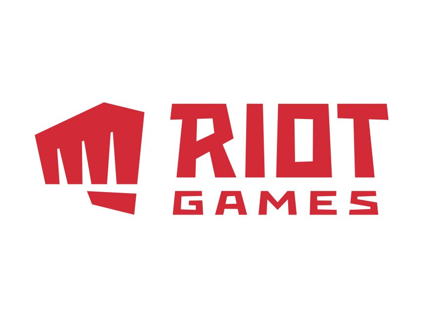

Misión
Brindar a los jugadores una interfaz limpia, ligera e independiente para organizar su colección sin importar la plataforma de origen.

RIOD GAMES es un prototipo interactivo desarrollado en la asignatura de desarrollo web. Nace como respuesta a la fragmentación de tiendas y plataformas en el mundo de los videojuegos: un solo lugar para toda tu colección, digital y física.
El propósito principal es proporcionar un espacio centralizado donde cada jugador pueda consolidar su catálogo digital y físico sin depender de las limitaciones de tiendas exclusivas.
Brindar a los jugadores una interfaz limpia, ligera e independiente para organizar su colección sin importar la plataforma de origen.
Ser un referente académico de arquitectura web limpia, con metadatos, tráileres interactivos y formularios intuitivos para la comunidad gamer.
Trabajo en equipo, orden, accesibilidad y mejora continua en cada versión del proyecto.
Este sitio fue construido con estándares modernos de desarrollo Front-End:
| Etapa | Qué hicimos | Estado |
|---|---|---|
| 1. Estructura | Páginas HTML5 semánticas y navegación | Completado |
| 2. Diseño | Estilos globales, tarjetas y animaciones CSS | Completado |
| 3. Contenido | Catálogo, fichas técnicas y tráileres | Completado |
| 4. Interactividad | Menú responsivo, ventanas flotantes, filtros y formulario con JavaScript | Completado |
RIOD GAMES fue desarrollado de manera colaborativa por nuestro equipo de ingeniería web. Haz clic en una tarjeta para ver más detalles.
Arquitectura Web & Coordinación
Diseño CSS & Estilos Globales
Ficha Técnica & Multimedia
Formularios & UI
QA & Documentación
Por ahora es un prototipo académico: el registro guarda los juegos solo en la memoria de la página y se vacía al recargar.
Steam, Epic Games, PlayStation, Xbox, Nintendo y copias físicas.
Sí, el diseño es Mobile First y se adapta a pantallas pequeñas y grandes.
Como proyecto académico en constante evolución, valoramos tus opiniones para futuras mejoras.